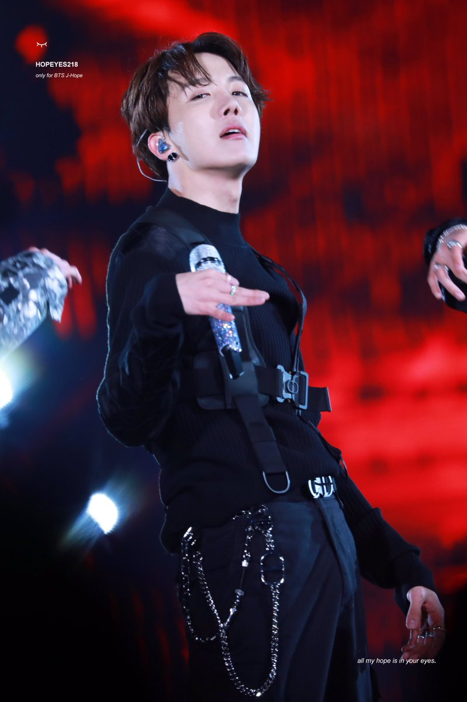
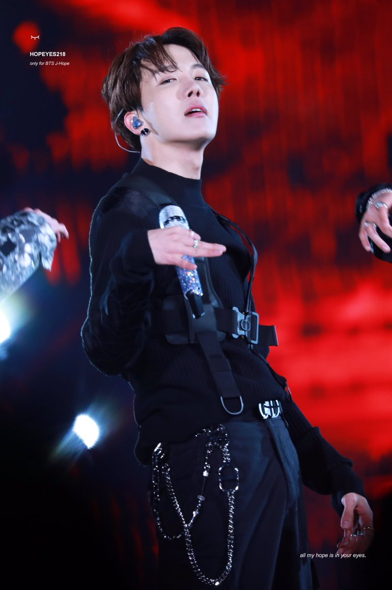
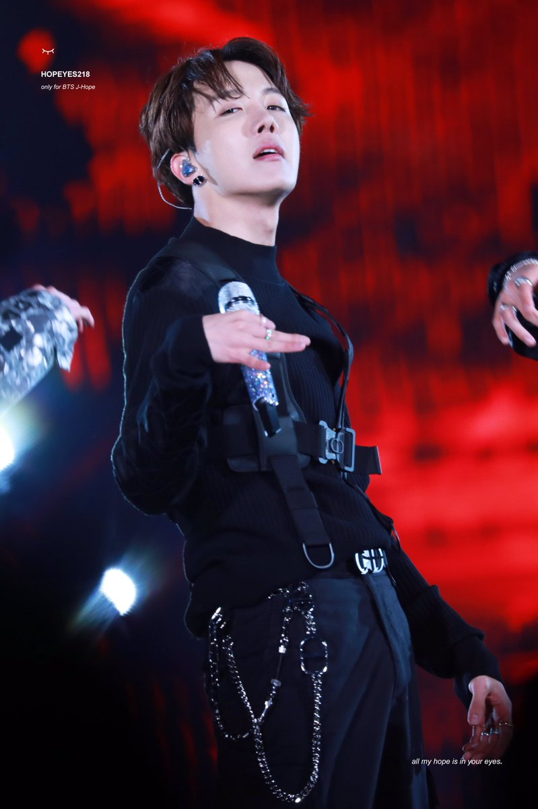

Galeria do BTS

 



O BTS é um grupo sul-coreano de K-pop formado em 2013 pela Big Hit Entertainment. Composto por sete integrantes – RM, Jin, Suga, J-Hope, Jimin, V e Jungkook –, eles se tornaram um dos grupos mais populares do mundo, conhecidos por suas músicas, performances incríveis e mensagens positivas.
K-pop é a abreviação de Korean Pop, um gênero musical originário da Coreia do Sul que combina diversos estilos, como pop, hip hop, R&B e música eletrônica. Além da música, o K-pop é famoso pelo visual, coreografias detalhadas e grande interação com fãs.
O BTS conquistou fãs globalmente, bateu recordes, lançou álbuns de sucesso e participou de grandes shows internacionais. Eles também são conhecidos por suas campanhas sociais, como o “Love Myself”, promovendo amor próprio e solidariedade.
